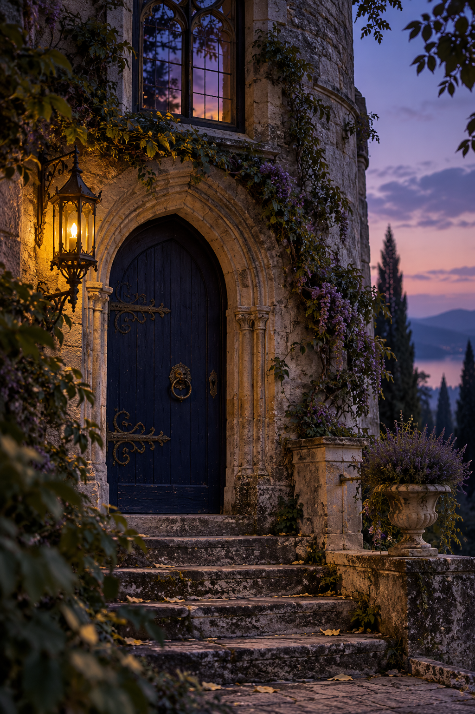
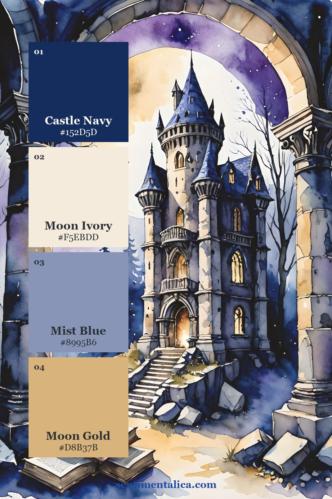
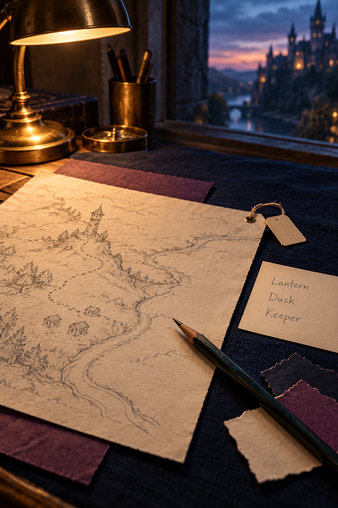
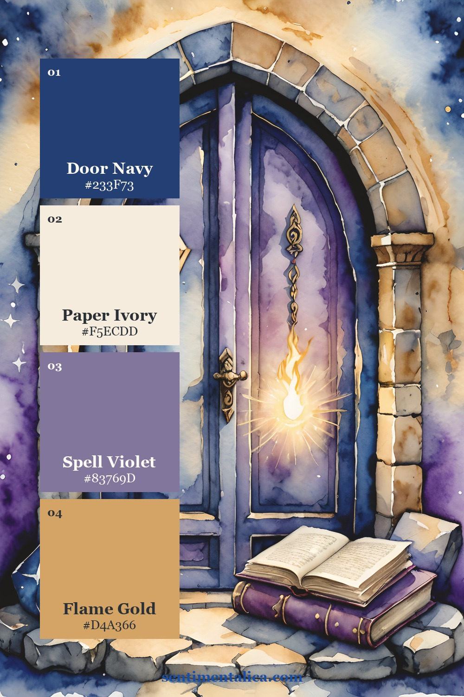
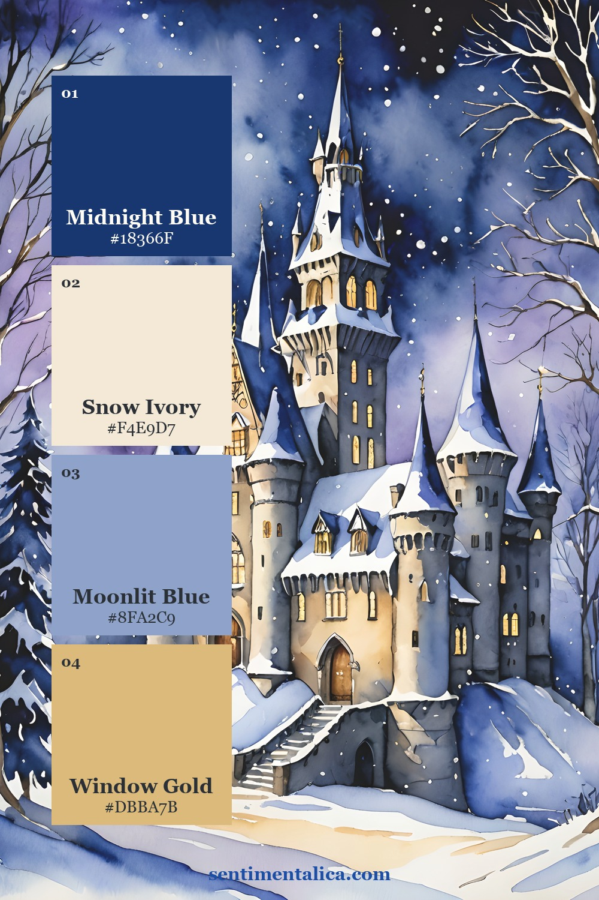
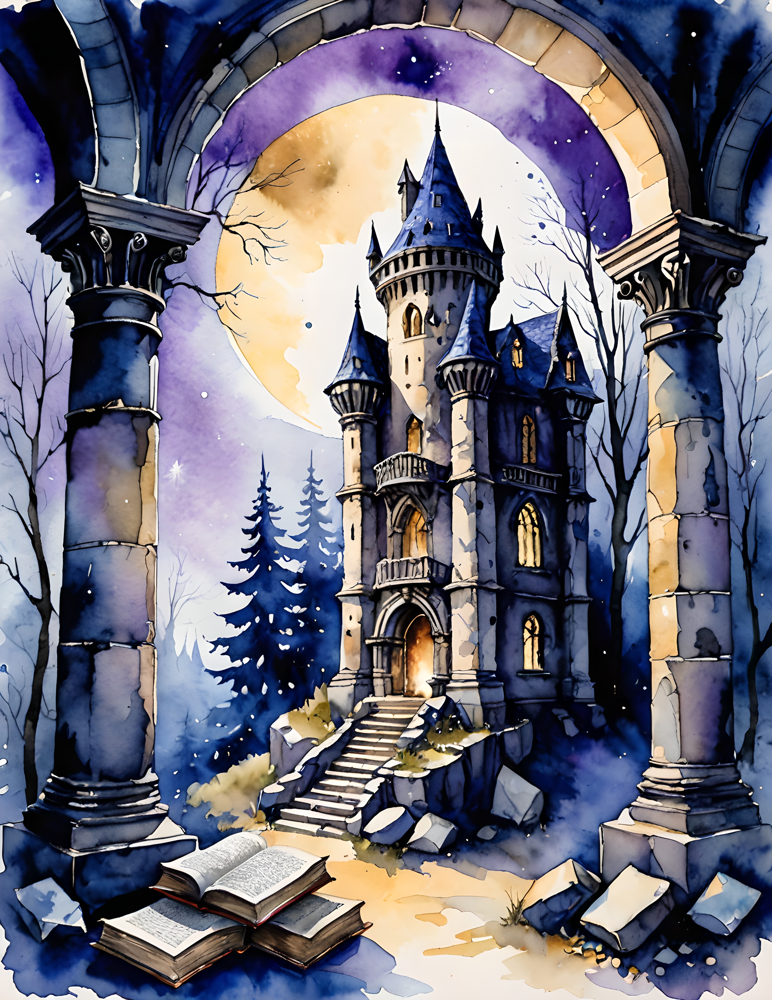
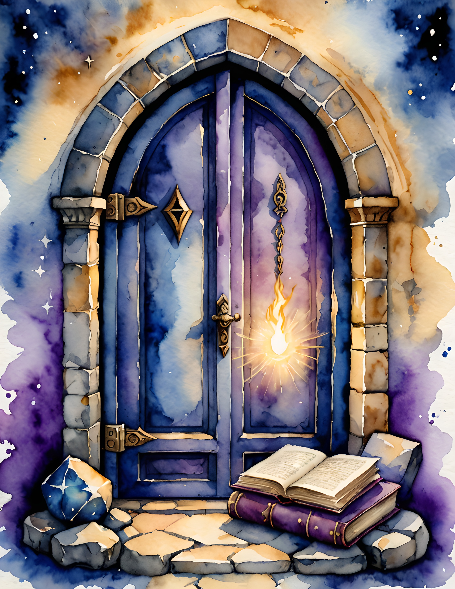
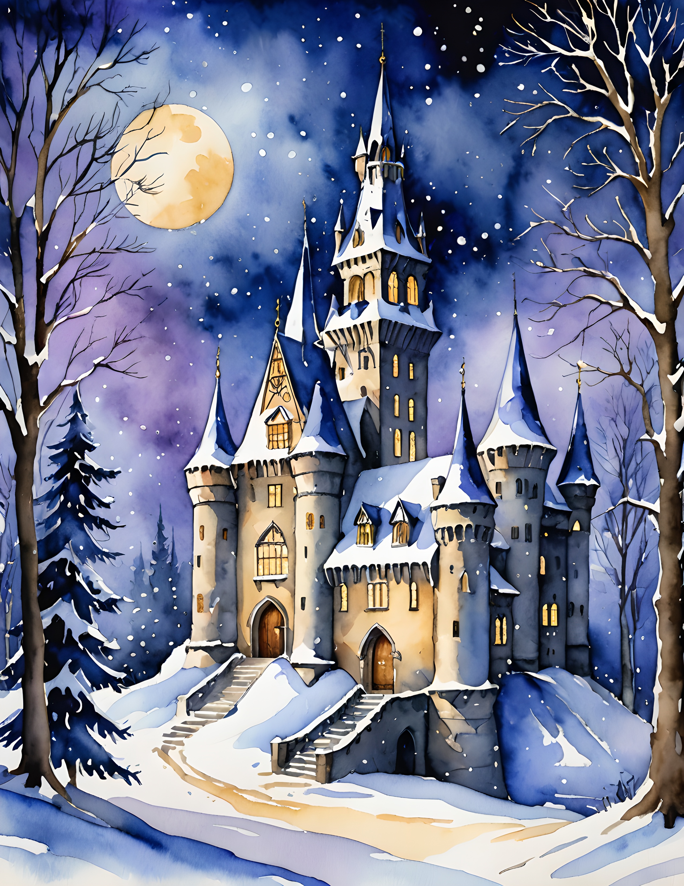

A wizard journal becomes more interesting when it records a place that seems to carry on while you are away. Begin with one landmark, one everyday rule, and a note from someone who lives there. These details can give your invented world a shape without requiring a whole map or a finished novel. Spell Cast’s watercolor images can suggest a moonlit setting, while your words decide what life there is like.

Choose a Landmark You Can Return To
Name one recognizable place: a tower above a bridge, a courtyard beside a library, or a gate that faces the sea. Make a rough sketch with just enough lines to remember the shape. Give the landmark a practical use as well as a mysterious appearance. Someone might wait there, deliver parcels there, or pass it on the way home.
Keep the name and location on a plain card. If you return to this journal later, those two facts will help you enter the same world again. You can add a larger map another day. For now, the landmark is a fixed point around which a small story can happen.
A place starts to feel real when someone has an ordinary reason to be there.

Invent an Everyday Rule with a Consequence
Choose a rule that affects ordinary behavior. Perhaps courtyard lamps are covered before dawn, borrowed books return through a particular door, or visitors leave muddy boots outside the tower. Decide who follows the rule and what small inconvenience it causes. This is a creative-writing exercise, so the rule can be entirely invented.
Write the rule in one line, then add an example beneath it. ‘No lamps after midnight’ becomes a scene when someone arrives late and must find the stairs by touch. The example makes the setting usable for stories instead of leaving it as a list of impressive magical facts.


Use Color as a Place Memory
The palette cards offer colors drawn from distinct real Spell Cast images. Select one palette for this place and repeat its paper tone and dark anchor in later entries. A narrow accent on a date card can help connect several pages without giving each one the same layout.
Leave your writing on quiet paper, especially when the chosen artwork contains strong contrast. The collection provides watercolor images rather than a completed worldbuilding form; create the landmark, rule, and note fields yourself. Let the artwork influence the atmosphere without treating every illustrated detail as a fact your setting must include.

Write a Note from One Resident
Choose a person who has a reason to use the landmark. Write a short note in their voice: a keeper explaining a closed door, a student borrowing a lamp, or a gardener asking someone to move a crate. Give the note a recipient and a practical request, then let one unusual detail belong naturally inside it.
You might write, ‘Please leave the key under the blue pot; the west door is singing again.’ The ordinary request makes the invented detail feel part of daily life. Keep the note brief and legible, with a name or initials at the bottom. You can learn more about the resident on another page.
Keep a Small Record of What You Invented
At the bottom of the spread, record the landmark name, the rule, and the resident in a compact reference strip. If you change something later, add a dated correction rather than trying to remember which version was current. This keeps a returning journal from contradicting itself by accident.
Before decorating the remaining corners, imagine visiting the place for five minutes. Can you say where you would arrive, what rule you would encounter, and who might leave you a message? If so, the page has enough life to begin. Choose a real collection image below as its setting, then save the next empty page for something that happens there.
Choose a Page for Your Own Layout
Compare the real collection pages below before deciding which image belongs in your project. Look for a focal detail that supports your story, then provide the writing space with your own plain paper. The palette cards show color possibilities, while these pages let you see the artwork itself.



Find more gentle paper projects in the Sentimentalica journal.